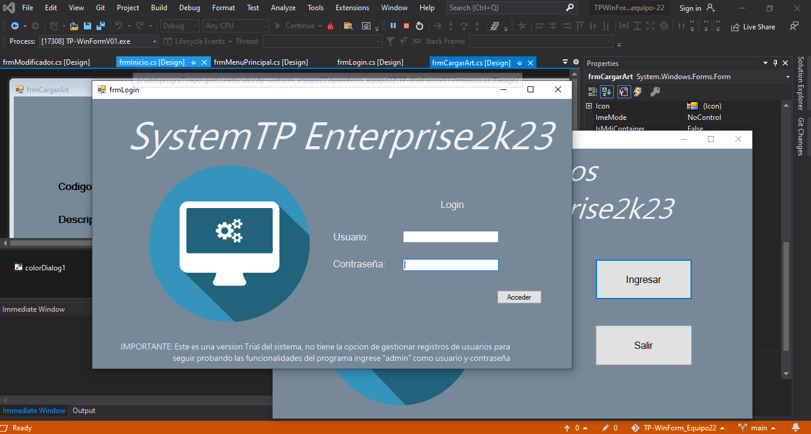
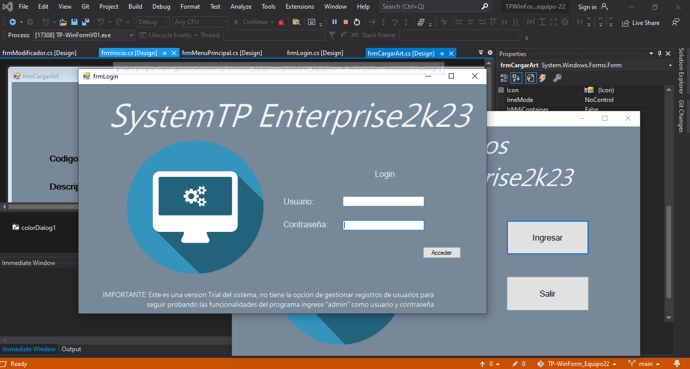
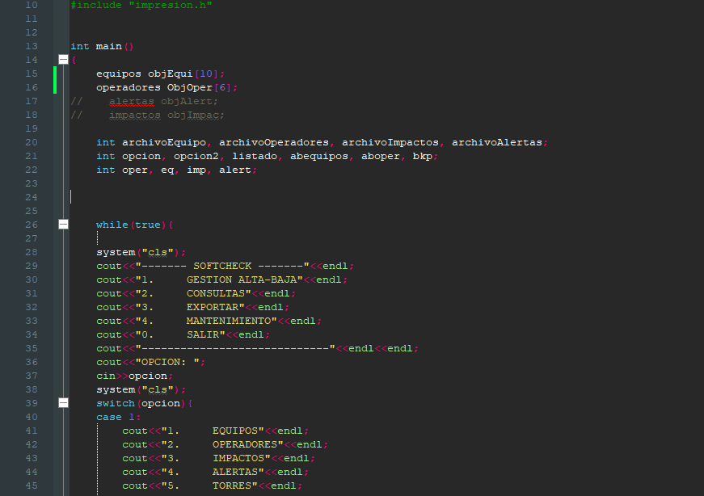
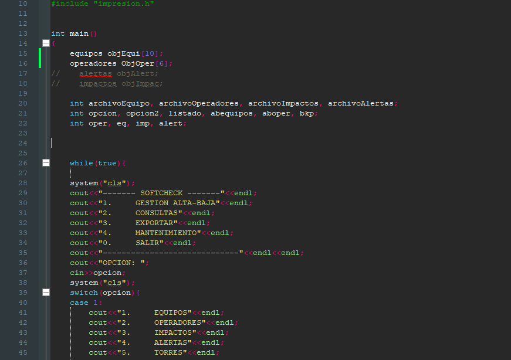

-


 

Gestion de articulos, sistemas de asistencias, sistema Pokedex.
Configuracion y conexion con base de datos SQL, practicas POO y utilizacion de herramientas
Sistemas de articulos Repositorio - GitHub
-


 

Juego matematico Matrhix, utilizacion de programacion estructurada, practicas en POO. Utilizacion de librerias y armado de funciones. Visualizacion mediante consola.
Sistema de alertas empresa IT Repositorio - GitHub
-
Certificaciones - - > Linkedin
Udemy: Desarrollo responsive, Software testing, SQL Server, Introducion a Python.
Coursera: IBM Cybersecurity Analyst, Administración de sistemas y servicios de infraestructura de TI.
NetCisco Networking Academy: Linux Essentials, Cybersecurity Essentials